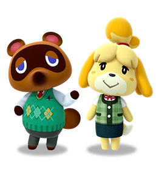
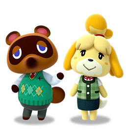

La misión de Nintendo es poner sonrisas en los rostros a todos. Lo hacemos creando nuevas sorpresas para que las personas de todo el mundo las disfruten juntos. Hemos forjado nuestro propio camino desde 1889, cuando comenzamos a hacer naipes hanafuda en Kioto, Japón. Hoy, tenemos la suerte de poder compartir nuestros personajes, ideas y mundos a través de los videojuegos y la industria del entretenimiento.
Nintendo de America, establecida en 1980 y con sede en Redmond, Washington, es una subsidiaria de propiedad total de Nintendo Co., Ltd. Estamos comprometidos a brindar los mejores productos y servicios a nuestros clientes y a invertir en el pozo. ser parte de nuestros empleados como parte de la familia global de Nintendo.
|
 
